Some Collections around MMDetection
这一页面主要为了收集mmdetection中提供实现的论文。这里收集或者提供链接的主要是相对冷门的paper，主流的如Faster-RCNN以及Retinanet不会再重复。
其余有实现，并记录在本网站其他地方的有FCOS, FreeAnchor, ATSS, RepPoints
Update:
2020/06/04: Updates HTC, DetectoRS
Single Stage Methods
GHM: Gradient Harmonized Single-stage Detector
这篇paper主要idea是loss function应该平衡不同样本之间的gradient norm. 过于困难的instance gradient norm较大而过于简单的的instance gradient理应会很小， 一个well trained detector的gradient norm分布如图
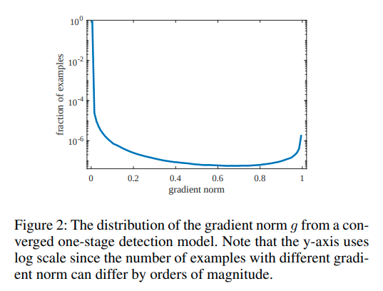 作者的想法是应该提升中间层，或者说gradient密度比较小的部分的梯度贡献。
定义梯度密度函数:
简单而言就是 为与梯度g临近的区间内，有相近梯度norm的example的个数/梯度区间长度。
也即是给loss加上与梯度example密度成反比的对应的权重。
FSAF: Feature Selective Anchor-Free Module for Single-Shot Object Detection
这篇paper的idea是让RetinaNet同时维护一个anchor free一个anchor based的分支，anchor_free的分支在每一个scale上都会受训练。 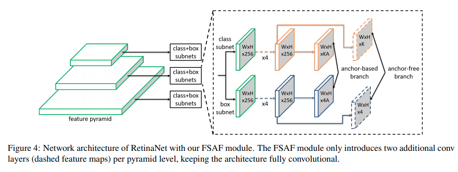
作者的online selection思路是让每一个scale上的anchor free分支都预测一次，然后得到对应的loss，寻找anchor free loss最小的scale，train对应scale的anchor-based分支。
Inference的时候则让所有6个分支各自输出，直接merge 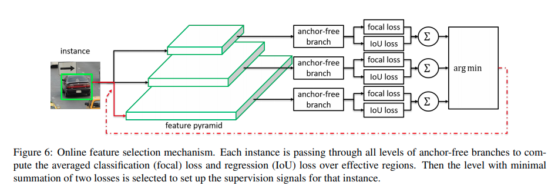
FoveaBox: Beyond Anchor-based Object Detector
这篇paper的思路是取Retinanet所有之精华，指出在FPN的multi-scale支持下，已经不需要anchor了，其实也就是每一个scale有一个anchor就够了。
Grid R-CNN
这篇paper从今日的角度来说可以理解为RoIPooling后的keypointNet，在grid point选择上有点不同，但是思路是相似的。
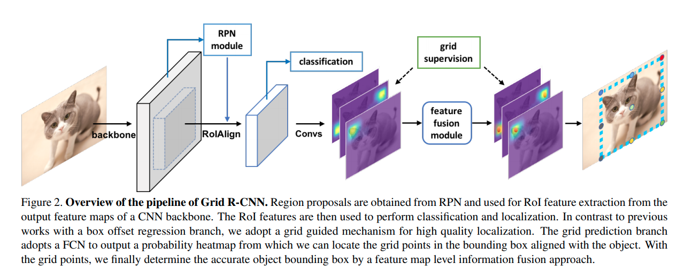
VarifocalNet: An IoU-aware Dense Object Detector
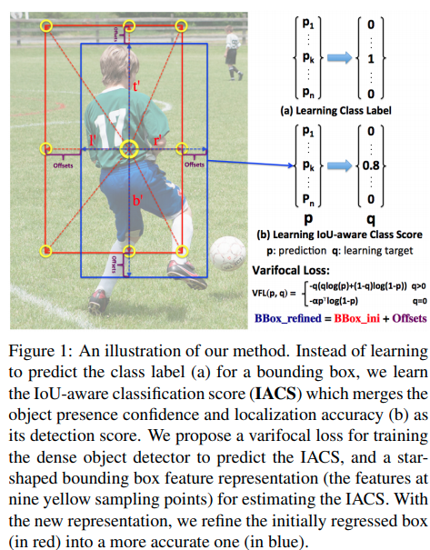
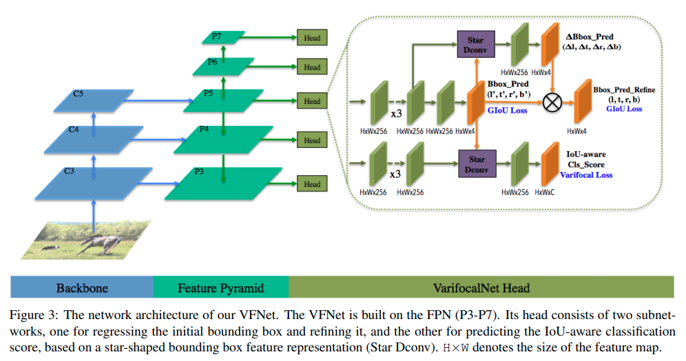
这篇paper的主要工作:
- Star Conv: 在第一次bounding box预测的基础上多跑一个deform conv, offset正是bounding box的各个角落.(让各个角落的feature融合到中心来的思路), 后面再输出一个比例修正项.
- varifocal loss:
Two Stage Methods
HTC
motivation: 1. instance segmentation, detection甚至pixel-wise segmentation之间是互相补充的。但是单纯的让网络同时训练这几个任务并不足够。 2. cascade RCNN提出了bounding box的迭代优化
本篇paper就提出让网络同时迭代的学习这三个任务(迭代主要发生在bounding box和instance seg里面)，在每次迭代的时候通过其他任务当前的预测进度进行信息补充。
信息流图: 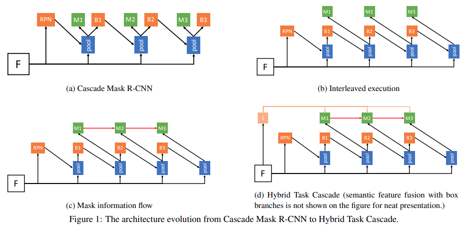
将Mask RCNN的预测分支放到cascade RCNN上，得到(a)流图:
其中是pooling操作，分别是bbox_head以及mask_head.
这种设置的一个提升方向是bbox以及mask还是并行的。作者让最新的bbox预测值用于mask head的输出，得到(b)
作者进一步考虑将前一次迭代的mask的信息来补充新mask的信息: 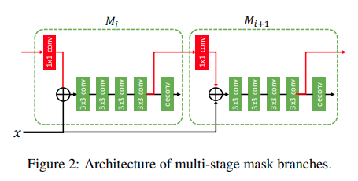
作者进一步考虑将semantic segmentation的信息加进来，得到: 其中为语义分割输出
DetectoRS
本文在更新的时候还没有放到mmdetection主分支上，是基于mmdetection 1.0版本设计的代码。同时更改了backbone,代码基于HTC.
主要提出的点是Recursive Feature Pyramid以及 Switchable Atrous Convolution
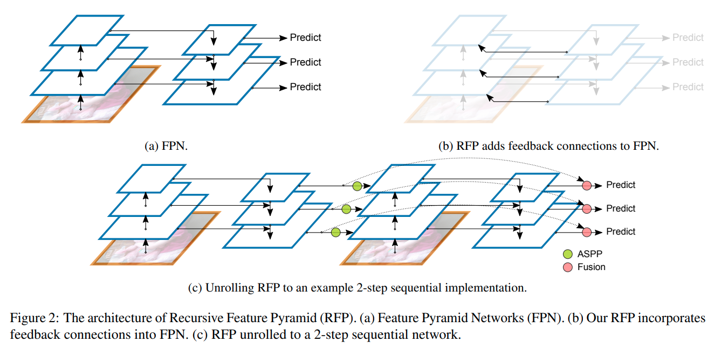
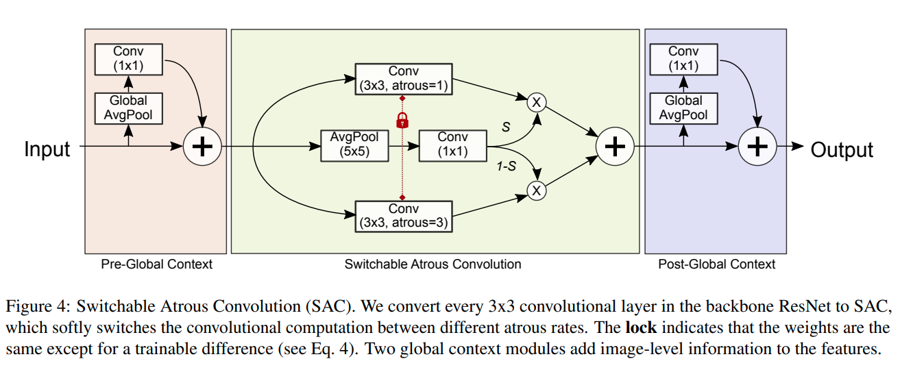
点数提升较为惊人，模型大小以及内存占用比较大(注意由于backbone的改变，其ResNet-50模型的大小近乎于HTC ResNeXt-101-64x4d的大小，且由于RFP的迭代原因，占用显存可能更大)。
CentripetalNet: Pursuing High-quality Keypoint Pairs for Object Detection
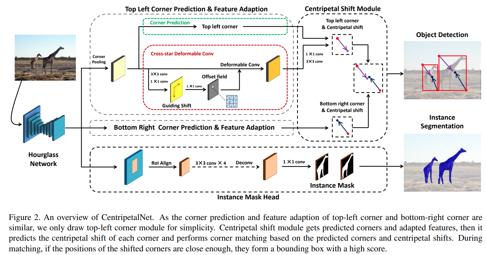
这个paper延续的是 CornerNet和CenterNet的思路.
- 用heatmap分别预测左上角以及右下角
- 预测一个左上角/右下角到中心点的偏移，作为guiding， 这个guiding可以被监督
- 以此偏移为基准跑deformable conv, 输出更精确的 centripetal shift
- 基于对中心点的预测将左上角与右下角进行匹配聚类
- 以预测出来的2D bounding box为基础预测 instance mask.
热点预测中角点的偏移(用于finetuning corner) / Guiding shift / 基于中心点预测的匹配中心区: 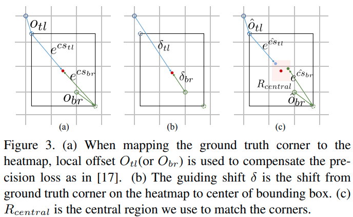
使用guiding deform conv的 intuition
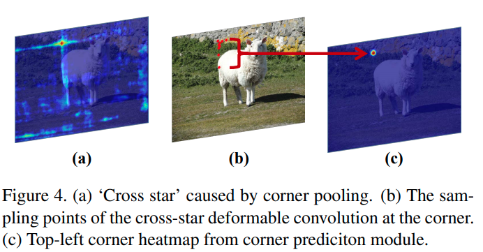
代码上本文的代码有点混乱，head与corner head代码有点重叠混杂.
SCNet: Training Inference Sample Consistency for Instance Segmentation
这篇paper基于 cascade mask RCNN 以及 HTC的串级思路。
主要提出的一个idea是克服训练时的RoI 准确率和推理时不同这个问题。
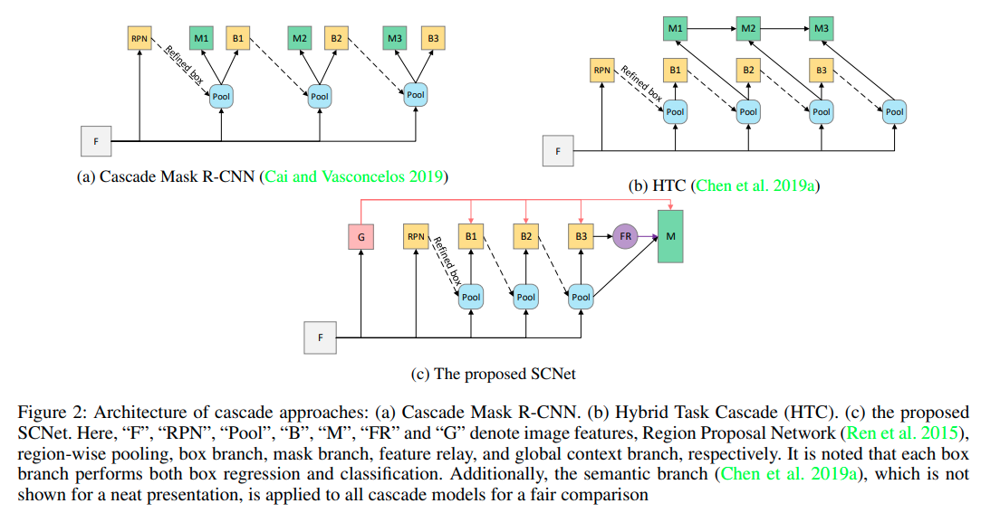
作者发现使用cascade训练的时候，提供给segmentation的bounding box有很多是基于没有那么准确的前方分支，而inferece的时候则只使用最后的分支。这里存在错配。因而提出mask只应该在最后一个分支出现。
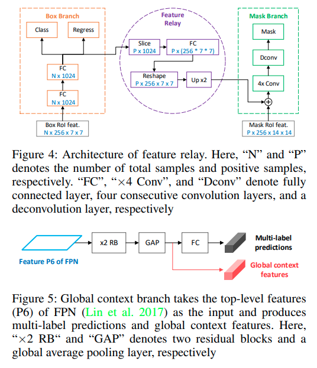